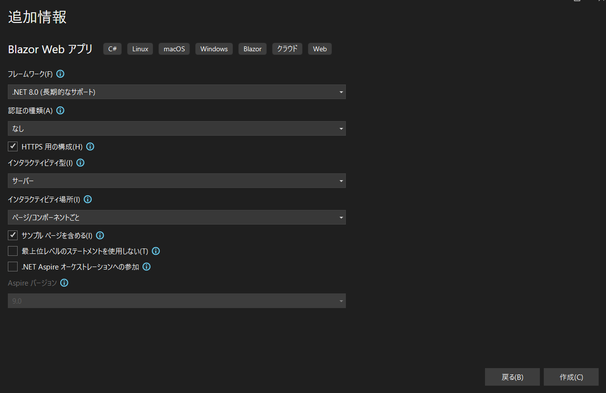

自分はメインのエディタをVisual Studio Codeを使ってたせいで、Blazorアプリを新規作成するときは大抵dotnet new blazorwasm -o MyBlazorAppのようにコマンドラインで実行しちゃってます。が、BlazorアプリをVisual Studio 2022（以下、VS2022）を使って開発する際はこの方法じゃなくて、ウィザードを利用する方法が主流です。その際は、開発するアプリの仕様についてウィザードに設定する必要があります。

この記事では、これらの項目をどのように設定すればいいか、作成したいアプリケーションとともに考えます。かなり自分目線の備忘録的意味合いが強いので、その点ご了承ください。
アプリが動作する基盤となる.NETのバージョンを選択します。
なお、現状ではサポート期間は以下の通り設定されています。
| バージョン | 開始日 | 終了日 |
|---|---|---|
| .NET 9 | 2024年11月12日 | 2026年5月12日 |
| .NET 8 (LTS) | 2023年11月14日 | 2026年11月10日 |
基本的に.NETのLTSは偶数バージョンに設定されており、奇数バージョンはSTSです。そのため、直近の偶数バージョンを選択することで自動的にLTSを選択できます。これについては、直近偶数バージョンの指定で決め打ちして問題ないと思います。
ユーザー認証の方式を選択します。
この項目は、ユーザー認証を実装する必要があるとき以外は基本的に「None」を設定すればいいでしょう。
チェックを入れると、開発用の自己署名証明書が設定され、HTTPSでのアクセスが有効になります。
コンポーネントをどのようにインタラクティブ（対話的）にするか、その既定の方式（レンダリングモード）を定義します。この項目と次の項目が、Blazorアプリを構築するうえで重要なオプションです。なぜなら、実装したいアプリのタイプによって、選択肢が変わってくるためです。
上記の「インタラクティビティの種類」をどこに適用するかを決定します。
@rendermode ディレクティブを使って個別に指定します。非常に柔軟性が高く、ほとんどのケースでこの設定が推奨されます。カウンターや天気予報などのサンプルコードを含むプロジェクトを作成します。Blazorの基本的な使い方を学ぶのに役立ちます。
Program.cs ファイルを、従来の Main メソッドを持つクラシックなC#の形式で生成します。チェックを外すと、より簡潔な記法（トップレベルステートメント）になります。
.NET Aspire という、クラウドネイティブな分散アプリケーションの構築を簡素化するための新しいスタックにプロジェクトを追加します。マイクロサービス開発などで利用します。
開発したいアプリケーションの要件に応じて、最適な設定は異なります。以下に代表的なシナリオごとのおすすめ設定を提案します。
一定時間ごと、あるいはイベント発生時に画面を自動で更新し続ける必要があるダッシュボードを開発する場合の設定です。
サーバーモードは、SignalRによるリアルタイム通信が特徴です。これにより、サーバー側のデータ変更を即座にUIへ反映させることができ、ダッシュボードの実装に非常に適しています。場所をページ/コンポーネントごとに設定し、ダッシュボードのコンポーネントにのみ @rendermode InteractiveServer を指定することで、アプリの他の静的なページ（例：「設定画面」や「ヘルプ」）は高速な静的SSRのままとし、リソースを効率的に利用できます。
コンテンツの大部分が静的で、高速な表示と検索エンジン最適化（SEO）を最優先したいブログのようなサイトを開発する場合の設定です。
既定をなしにすることで、全てのページが高速な静的SSRになります。これにより、ユーザーは素早くコンテンツを閲覧でき、検索エンジンのクローラーも内容を効率的にインデックスできます。インタラクティビティの場所をページ/コンポーネントごとにしておくことで、将来的に「コメント投稿フォーム」のような対話的な機能を追加したくなった場合でも、そのコンポーネントにだけ @rendermode InteractiveServer などを追加して柔軟に対応できます。
一度読み込めばオフラインでも動作し、PCやスマートフォンのホーム画面にインストールできるような高機能な業務アプリケーション（PWA）を開発する場合の設定です。
WebAssemblyモードは、アプリ全体がブラウザ上で動作するため、オフライン機能の実現に必須です。アプリ全体がリッチな対話性を持つことが多いため、場所はグローバルで一括適用するのが効率的です。自動 (Auto) モードを選択すれば、初回起動の高速化も図れるため、ユーザー体験が向上します。
イントラネットで利用するような、複雑なデータ検証やデータベースとの連携が頻繁に発生する基幹業務システムを開発する場合の設定です。
サーバーモードでは、ビジネスロジックやデータアクセスを全てサーバーサイドに集約できます。クライアントにロジックをダウンロードする必要がないため、初期表示が速く、セキュリティ面でも有利です。複雑なフォームの入力状態や検証ロジックをサーバー側で一元管理できるため、開発と保守が容易になります。このようなアプリは全体がインタラクティブであることが一般的なため、場所はグローバルで問題ないでしょう。